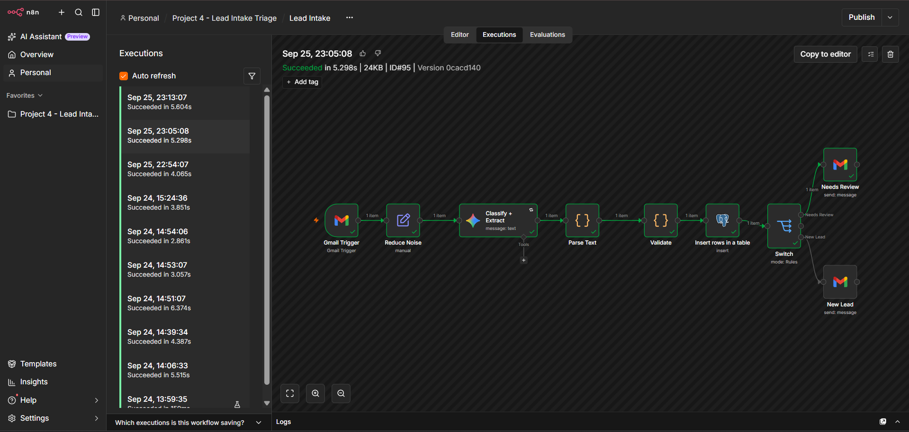
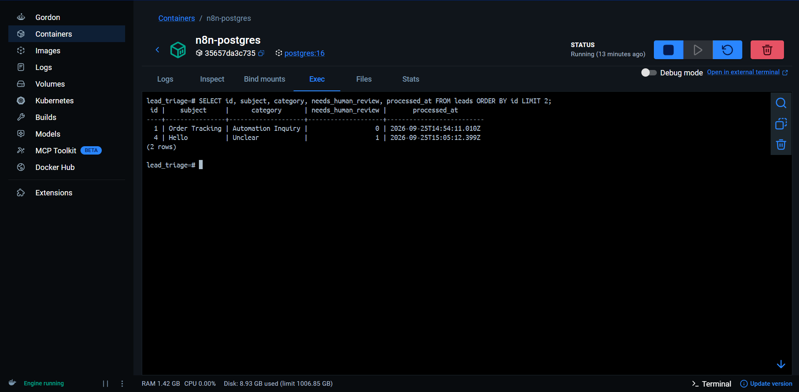
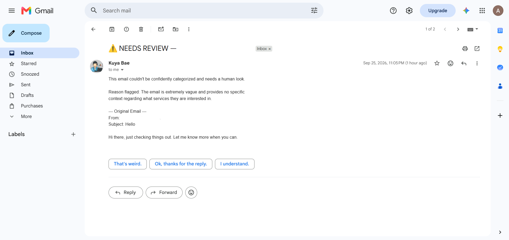
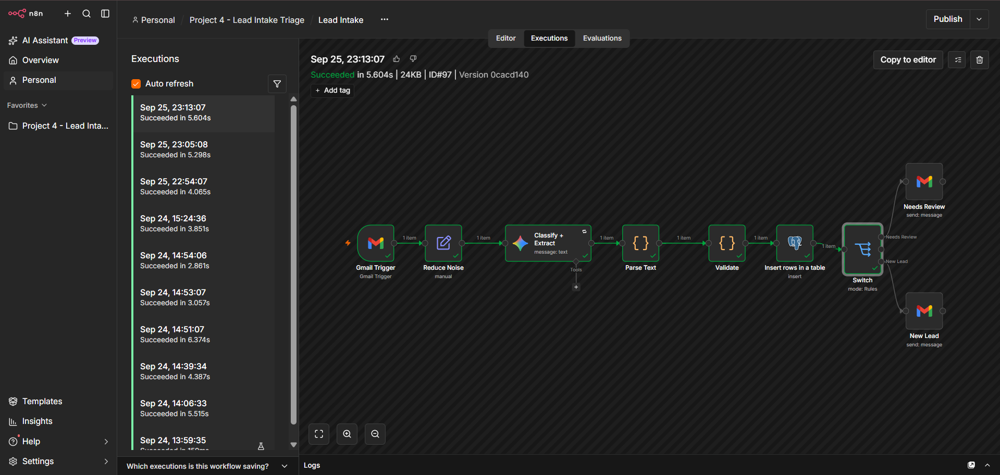
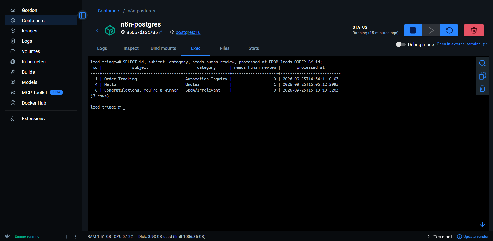

Lead Intake Triage
Small businesses that get inbound leads by email end up losing time reading, sorting, and routing every message by hand. Worse, that manual process makes it easy to miss an urgent lead, a pricing question, or an existing client's follow-up buried in a busy inbox.
Every email had to be opened, read in full, and judged by hand: is this a real lead, a pricing question, a support issue, spam, or something unclear? Details like sender info, budget, and intent got copied somewhere by hand too, whether that was a spreadsheet, a notebook, or just memory. The more emails came in, the longer this took, and there was no consistent record of what came in or how it got handled.
I built an n8n workflow that watches a Gmail inbox for new unread messages. Each email is stripped down to its essential fields and sent to Gemini with a structured extraction prompt, which returns sender info, a plain-English summary, one of six fixed categories, extracted budget, urgency, and a self-reported confidence score. A validation layer checks that output against a few independent rules before anything gets trusted, and every processed email is logged to Postgres regardless of outcome. From there, a Switch node routes things three ways: confidently categorized leads get a clean summary sent to the business owner, anything ambiguous or low-confidence triggers a separate review email with the raw original text and the reason it got flagged, and spam is just logged quietly with no notification at all.
- n8n (self-hosted via Docker)
- Google Gemini (gemini-3.1-flash-lite)
- Gmail
- PostgreSQL (self-hosted via Docker)
The LLM handles the part of this task that's genuinely unstructured: reading free-form language and figuring out what the sender actually wants, then pulling out details like budget and urgency that may or may not be stated outright. It's also instructed to say "Unclear" rather than force a guess when something doesn't cleanly fit a category.
A person still makes the final call on anything the system can't confidently classify, and still acts on flagged leads by replying, quoting a price, or scheduling a call. The system cuts down triage time and surfaces what needs attention. It doesn't take the human out of the decision.
Across 8 stress-test emails, automated processing averaged 3.36 seconds per email, ranging from about 2 to 4.5 seconds, while manual triage was self-timed at roughly 15 to 20 seconds for short emails and 30 to 60 seconds for longer ones, averaging around 19 seconds per email for the same batch. That works out to roughly a 5 to 6x speed improvement. The real bottleneck in manual triage was never reading the email, it was the classification and extraction judgment call, which is exactly the part this pipeline now handles.
Across all 11 emails tested during development, including edge cases, manual review confirmed the AI's classification was correct every time, with zero confidently mislabeled emails. Every ambiguous, low-confidence, or unverifiable case was correctly escalated to human review instead of being forced into a category.
- Uses a polling-based trigger that checks the inbox every minute rather than a real-time push webhook, which would matter more at higher email volume.
- Categories are fixed at six. A genuinely new type of inquiry outside those six will likely land in "Unclear" rather than being handled well. That's by design, but it means the category list needs periodic review as real usage patterns show up.
- Budget and urgency extraction depend entirely on the sender actually stating them. The system is told not to invent unstated figures, so vague inquiries often come back as "not mentioned" or "not stated," which is correct behavior but limits how much can be automated for those leads.
- The system can't verify a sender's claim of prior history or an existing relationship. That risk is reduced, not eliminated, by forcing every Support/Follow-up classification into human review regardless of confidence, since it references history the system has no way to check.